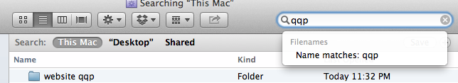

Getting Things Done With Simplenote
-- written by Sebastian Raschka on September 22, 2013
Tweet
Every now and then I try to learn from my previous experiences and try to refine my task and project management implementation. My whole goal is to have a system that allows me to have both my tasks and my references handy in one place. An important prerequisite for the tool of choice is that it must be plain and simple to use, transferable, and available on all different platforms that I am using: iPad, iPhone, Mac, and my Linux computer at work.
OVERVIEW
Simplenote and GTDThe "qq" Approach
Summary of Key Items
Inbox Items
Next Action
Projects
Reference Material
Waiting For and Maybe Items
Reminders, Alerts, and Reoccurring Tasks
Keeping Track Of What I Have Done This Week
Checking Off Finished Tasks
What About Image Files and PDFs
Contexts: @home and @work
Weekly Reviews
Backup and Transferability
Conclusions
Previously, I was using Apple's Reminders app for managing my tasks and projects. It's a great tool to manage simple tasks, but the downside was that it was that it was quite inconvenient to link those to the reference material: It likely ended up scattered over my email client and in text files in my Dropbox folders.
Simplenote and GTD
I am a big fan of David Allen's Getting Things Done approach (GTD), which I successfully adopted about 2 years ago - yes, I am still very passionate about it. But still, I haven't found the ideal tool for the optimal workflow yet - capturing and managing tasks. Probably I never will, but I feel like that I am getting closer!
Now, after the recent release of iOS accompanied by Simplenote's UI overhaul, I decided that it was about time to rethink (or rather refine) me GTD implementation again. (An additional bonus point for Simplenote is that it is free and costs you nothing!)
The "qq" Approach
Inspired by Merlin Mann's ingenious "qq"-trick I came up with a very simple system that allows me to manage my tasks with highest efficiency. In the following paragraphs I am going to present the modifications I made to the "qq"-trick that works so well for me.
Summary Table of Key Items
You can find the nuts and bolts of my "qq" implementation summarized in the table below - a primer of what I want to explain in the rest of the article. It is not much for an entire Getting Things Done project management system, isn't it? - It's really that simple! After reading the complete article, I suggest to come back to this section and give this table a quickly review; after that you should me more than good to go.
search keys:
- qqi - "inbox" item
- qqn - "next action" item
- qqp - project list
- qqw - "waiting for" item
- qqm - "maybe" item
context tags:
- @today - tasks you want to complete today
- @home - stuff to do at home
- @work - things to do at work
- @projname - reference material for a project
Inbox Items
For every inbox item I create a new note in Simplenote where the title becomes the description of the item, concluded with an "qqi" at the end of the title. If I have a longer text (e.g., an excerpt from an website article that I want to capture) it goes below the title. I use "qq", because it is unique in the English language (probably no word that I use would contain a "qq") and easy to type. The "i" in "qqi" stands for inbox. With Simplenote's powerful and fast search function, I can now quickly filter for my inbox items when I am reviewing my tasks.
Next Action Items
Similarly to inbox items, for simple 1-action items, e.g., "bring letter X to the post office," I would add an "qqa", where the "a" stands for "action." When I want to see the hard landscape of the tasks that lie ahead of me, I can now simply type "qqa" into Simplenote's handy search bar to filter for those items.
Projects
If the task requires multiple steps, I would make it a project. Therefore, I simply add an "qqp" to the end of the title ("p" for project as you might have already guessed by now). Because each "qqp" item is also a note by nature, I can add the project's individual actions into the note body. Nice about this approach is that it will allow me to create hierarchies, which was impossible to do in the Reminders App.
Reference Material
This is where Simplenote really shines: the power of tags! So let's assume I have created a project, and now I want to link it to the accompanying reference material. I can simply create a new tag for this project and tag all the reference material accordingly. Optionally I can add a second and universal @reference tag to all my reference material in case I want to get a complete overview.
Waiting For and Maybe Items
Those two categories, "waiting for" and "maybe," work also similarly to inbox and next action items. Here, I use "qqw" for "waiting for" items. These are items where I am waiting for someone to get back to me. And I use "qqm" as the indicator for "maybe" items, which are items that need reconsideration, for example, books I maybe want to read if I have time.
Reminders, Alerts, and Reoccurring Tasks
I don't keep reminders in Simplenote. Items that require reconsideration become "maybe" items. And for the important tasks that require an action on a given date and/or time, they go directly into my calendar where I can add an alert. This approach works best for me, because I can see at one glance at my calendar what awaits me for any given day, week, or month. An reoccurring action, e.g., "take out the trash every Monday morning", is also something that would go into my calendar. For some reoccurring tasks that I manage in my calendar, I would still make additional "next action" items in Simplenote. One example for such an action could be, "check website X for updates every month." This task doesn't require immediate action, but I want to be reminded about it every now and then.
Keeping Track Of What I Have Done This Week
A nice feature, and this is why I prefer Simplenote over simple plain text files on my computer, is its "History" feature. If I want to see what actions I have accomplished in the last week, let's say for a weekly report, I can simply go to "Trash" and filter for "qqa. And if I want to see what tasks I checked of from a project list, I just open the project's "qqp" file and make use of Simplenote's powerful "History" feature, which allows me to see and optionally restore previous versions of the note.
Checking Off Finished Tasks
You have multiple options here. Usually I would simply trash finished tasks (remember, as long as you don't empty the trash, you can always bring them back if needed). Sometimes, for the more important tasks or projects, and basically for all of the reference material, I would just remove the "qq*" from the title and add a universal @archive tag to them in case I want to search for something later.
What About Image Files and PDFs
For those cases where I have reference material in form of PDF or image files, I keep folders outside of Simplenote in my Dropbox. I would name those folders similar to the project file in Simplenote so that I don't even have to manually look for them in the file browser, but can simply type the name of the project into the file browser's search bar (or Spotlight).

Contexts: @home and @work
Many people, including myself, want to work on a different set of tasks when they are either at home or at work. No problem with this GTD approach: I just add an @home tag for the tasks that I want to do at home, and an @work tag for those to-dos at work. Now, I can filter for just those "qq"s by clicking on the context tag. What if there is a task that I could do either at home or at work, for example, writing an email to Mr. Y? Also no problem: I just add both tags @home and @work so that the task will show up in both contexts.
Weekly Reviews
To be happy and productive with a GTD system, weekly reviews are crucial. Once in a week, often on Saturday mornings, I review my entire GTD system, rearrange project items, define next actions, clear out stale items from my maybe list, etc. The nice advantage about the "qq" system is that I can simply type "qq" into the search bar and it will bring up all my items at once so that I can work through them sequentially.
Backup and Transferability
Some of my initial thoughts when I start using any new software include "What happens when they shut down the servers?"
"What if I decide to use different software at some point"?
"Can I use my stuff on different operating systems?"
…
The solution here is a small and free tool called Notational Velocity, or
alternatively nvALT by Brett
Terpstra. There is also a Linux app, nvPY, which works quite similarly. Those tools are very similar to the Simplenote app, but also work offline or open, create, and edit text files from a folder in Dropbox.
And the icing on the top is that they can also synchronize with your
Simplenote account, which offers the ideal backup solution.
In a nutshell: Notational Velocity & Co will reads notes from Simplenote and saves them to a location on your Computer/Dropbox as plain text files.
Those plain text files can be used for offline work - they can be synced back to Simplenote via the same tools - and/or they can be archived.
But the "qq" system can be used even without any special
tool. All that is required is the simplest functionality of any
operating system: I can just use my file browser and its search bar.
This is for the worst case scenario when Simplenote stops working
immediately - what I doubt it will…
Conclusions
I implemented this system recently and it works very well for me so far. Simplenote's servers work well, and I haven't lost a note so far - at least I think I didn't. Also, the synchronization across my different devices and computers works well, smoothly and reliably. Also, there are other tools that sync with Simplenote, Brett Terpstra's nvALT is a very popular example, which will allow you to create local back ups of your note files. Those are simple text files that can be opened with your favorite text editor of choice, and which are in a format that I think will be the only one to surely stand the test of time. Currently, I am also working on a standalone App that will allow you to export and backup your text notes from Simplenote to your computer without the detour over other note taking apps.
For a quick review of what we have covered, please refer to the summary of key items.comments powered by Disqus